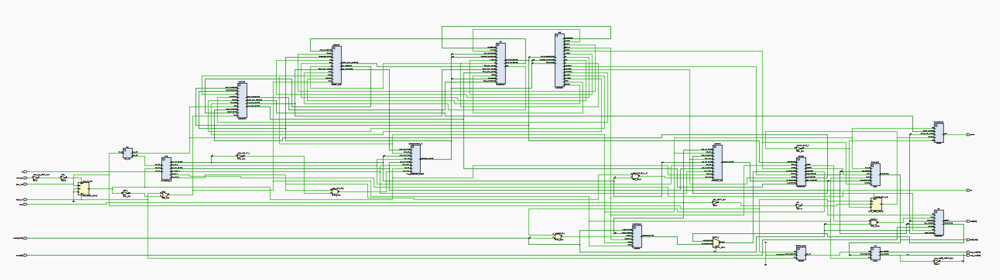
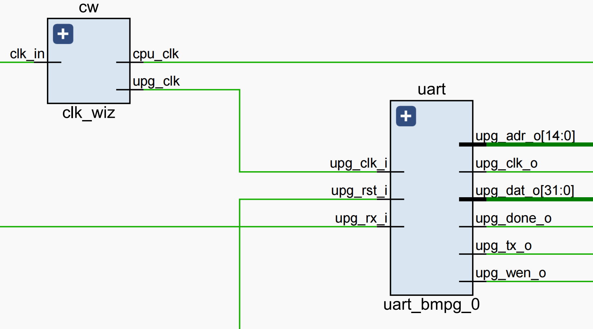
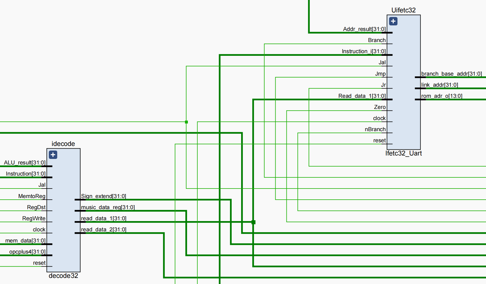
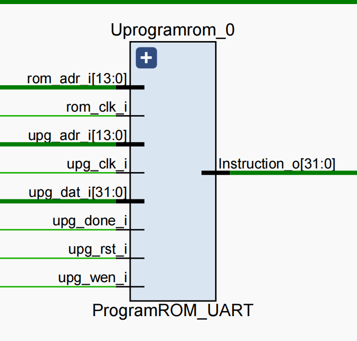
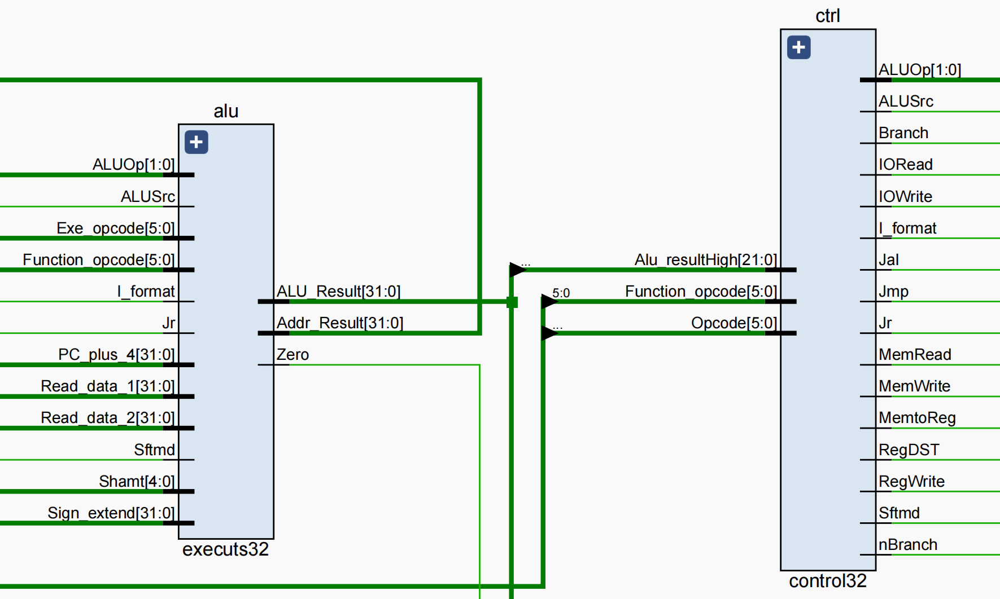
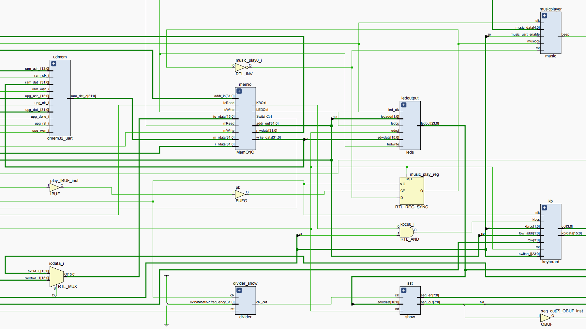

Part1-项目需求及开发者说明1.1）项目需求1.2）开发者说明Part2-版本更迭记录Part3-CPU架构设计说明3.1）CPU特性3.2）CPU接口时钟复位UART接口数据输入&输出接口3.3）CPU内部结构3.4）CPU内部子模块的设计说明（模块名称、模块功能及功能说明）Part4-测试情况4.1）测试总览4.1.1) 仿真测试4.1.2) 上板测试4.2）asm文件详细描述4.2.1)测试场景14.2.2)测试场景2Part5-bonus5.1）实现对复杂外设接口的支持，在我们的Project中为对小键盘、七段数码管复杂外设接口的支持 5.2）实现了音乐播放器功能，可以通过调整PWM，使蜂鸣器播放音乐；以及通过UART传入乐谱播放音乐 5.3）基于CPU的软硬件协同的应用 Part6-开发过程中遇到的问题、思考、总结6.1）小组成员：刘圣鼎6.2）小组成员：谢嘉楠6.3）小组成员：张展玮
本次项目我们实现了一个CPU，支持Minisys的基本32条指令，可以解析传入的coe文件，并通过Minisys开 发板与用户完成交互，接受用户输入并将结果显示在开发板上。
| 12110817 张展玮 | 12110813 刘圣鼎 | 12110714 谢嘉楠 | |
|---|---|---|---|
| 负责任务 | CPU模块和MIPS场景二的前四部分、音乐播放器 | MIPS场景一、场景二的后四部分和键盘I/O | CPU模块、UART、音乐播放器 |
| 贡献占比 | 33.3% | 33.3% | 33.3% |
https://github.com/ITBillZ/CS214-Computer-Organization-Project.git
| 所支持的ISA | 参考了Minisys的指令集（共31条），提供了32个32位的寄存器 |
| 寻址空间设计 | 在此CPU中采用了哈佛结构，即指令储存与数据储存分开的方式。指令空间起始地址为prgrom的0x00000000, 数据空间起始地址为dmem的0x00000000, 它们的读写宽度都为32bits, 读写深度均为16384bits，外设IO的寻址范围为 0xFFFFFC00 至 0xFFFFFFFF，寻址单位均为一个字即4个字节。 |
| 对外设IO的支持 | 采用MMIO以及轮询的方式访问IO。使用switch和keyboard作为输入设备，led、七段数码管和蜂鸣器作为输出设备。输入的内存首地址是0xFFFFFC70，输出的内存首地址是0xFFFFFC60 |
| CPI | 单周期CPU，不支持pipeline，CPI接近1 |
| 栈空间方案 | 栈空间的位置（基地址）为0XFFFFFC00 |
在本CPU中使用到了开发板提供的100MHz时钟（Y18），通过IP核分别转化成为了10MHz（供单周期CPU使用）以及10MHz（供UART接口使用），占空比为50%的周期时钟信号。
在本CPU中，我们通过高电位信号来判断复位信号，并通过开发板的按钮外设来控制复位信号的输入。在按下复位按钮（P4）之后，CPU将会重新回到初始状态，之前的所有状态将会被清空。
我们实现并提供了UART接口，该接口可以支持将生成好的COE文件发送给CPU。使用该接口需要按下CPU中设定好的用来控制通信状态的按钮（P1）来使CPU进入通信状态（此时，七段数码显示管第一位高亮来提示已经进入通信状态）。在此状态下之后，使用串口调试助手将指定文件发送给CPU，当显示发送完成的字样后，再次按下控制按钮（P4）来使CPU回到普通工作模式即可。在此还用到了Y19以及V18端口来分别作为数据的接受和发送端。






| 模块名称 | 模块功能 | 功能说明 |
|---|---|---|
| clk_wiz | 将开发板的时钟信号调至10MHZ后输出 | 输入开发板时钟信号，输出调整后的CPU clock以及供uart接口使用的时钟信号 |
| divider | 有一个周期参数值，可以通过传入参数，进行不同的时钟分频 | 主要用于产生用于晶体管显示的时钟 |
| BUFG | 消除外设抖动 | 对通信模式按钮和音乐播放按钮进行防抖处理，提高操作灵敏度 |
| uart_bmpg_0 | uart接口模块 | 连接CPU和uart外设 |
| Ifetc32_Uart | 通过传入的指令来计算并存储PC与Next_PC值 | 通过分析指令的编码来判断PC与Next_PC值 |
| ProgramROM_UART | 从指令存储中获取指令 | 通过ip核根据给予的参数来获取指令 |
| decode32 | 含有32个32位寄存器用来存储数据，同时根据传入的参数计算出目标寄存器以及目标数据 | 通过传入的控制信号来判断目标寄存器以及目标数据 |
| control32 | 通过传入的参数产生各个控制信号给到下游模块作为指示 | 通过解析传入的opcode和function_code来给出控制信号 |
| executs32 | 计算单元，根据参数计算出地址以及数学计算结果 | 通过控制信号计算出相应结果 |
| dmem32_uart | 通过给予的参数从数据存储中获得数据 | 包含ip核，同时与uart接口有关，接受uart的写入 |
| MemOrIO | 外设接口模块，控制数据输入输出流向 | 通过控制信号判断流向，给出外设指定的IO数据地址 |
| leds | 输出外设模块 | 与MemOrIO交互，输出存储在输出内存空间的数据 |
| switchs | 输入外设模块 | 与MemOrIO交互，数据存储到输入内存空间 |
| keyboard | 输入外设模块 | 与MemOrIO交互，利用片选信号实现输入外设的切换，数据存储到输入内存空间 |
| show | 输出外设模块 | 与MemOrIO交互，输出存储在输出内存空间的数据 |
| music | 输出外设模块 | 与MemOrIO交互，读取记录在内存空间的“乐谱”，并在系列操作后得到pwm实现音乐播放 |
| 测试内容 | 测试结果 | 结论 | 修改 | |
|---|---|---|---|---|
| Next_PC与PC的正确性 | 错误 | 更新Next_PC与PC的上升沿和下降沿设置错误，导致两者在信号为稳定时更新 | Next_PC的敏感信号设置为*，PC设置为下降沿 | |
| 同上 | 正确 | - | - | |
| jr的正确性 | 错误 | read_data_1的typo，导致此信号无法正常传递，jr跑飞 | 更正typo | |
| 同上 | 正确 | - | - | |
| 其他基本指令的正确性 | 正确 | |||
| 蜂鸣器的正确性 | 正确 |
| 测试内容 | 测试结果 | 结论 | 修改 | |
|---|---|---|---|---|
| 根据用户拨码开关输入的测试用例，直接通过LED灯执行输出 | 正确 | |||
| uart的正确性 | 错误 | uart写入时地址偏移错误 | 修改写入时的地址偏移 | |
| 同上 | 正确 | |||
| 根据用户输入的测试用例，进入不同的功能模块。包括奇偶校验、位运算、四则运算、累加等。 | 正确 | |||
| 键盘输入的正确性 | 正确 | |||
| 蜂鸣器发声的正确性 | 正确 |
1.如何实现IO模块，与用户交互
x##采用MMIO的方式访问IO设备，其中：##0XFFFFFC70作为输入的首地址##0XFFFFFC60作为输出的首地址start: lui $1,0xFFFF ori $28,$1,0xF000##通过轮询的方式访问IO，通过判断高八位的开关的状态选择进入哪一模块loop: lw $1, 0xC72($28) #left-8 switch in $1 andi $1, $1, 7
beq $1,$17,parity1 #000 0 beq $1,$18,parity2 #001 1 beq $1,$19,bitNor #010 2 beq $1,$20, bitOr #011 3 beq $1,$21, bitXor #100 4 beq $1,$22, uCompare #101 5 beq $1,$23, Compare #110 6 beq $1,$24, loadAndShow #111 7 ##读入数据 lw $2,0xC70($28) #2号寄存器存放测试用例##输出数据 sw $25, 0xC62($28) #此时25号寄存器存放奇偶校验位，溢出检验位等，最终显示在高八位的led灯和左侧七段数码管上 sw $25, 0xC60($28) #此时25号寄存器存放运算的结果，最终显示在低16位的led灯和右侧七段数码管上 我们通过轮询的方式等待读入信号，当我们在开发板上输入完数据后，1号寄存器通过当前的输入决定进入哪一个模块，同时2号寄存器存放测试用例，25号寄存器用来存放测试结果
2.测试场景（奇偶校验）
xxxxxxxxxxparity1: lw $2,0xC70($28) #obtain the first number a, get the first 8 bits and shift right 8 bits andi $2,$2,0xFF00 sw $2,0xC60($28) srl $2,$2,8 #a addi $3,$0,1 #test bit addi $5,$0,0 # $5:save the cnt of 1loop1: addi $6, $0, 128 #128为低7位的奇偶校验，256为全部8位的奇偶校验 beq $3,$6,Exit and $4,$2,$3 beq $4,$3,isOne sll $3,$3,1 j loop1isOne: addi $5,$5,1 sll $3,$3,1 j loop1
Exit: andi $5,$5,1 #check if the cnt of 1 is odd addi $6, $0, 1 beq $5,$6,off addi $25,$0,1 sw $25, 0xC62($28) j loop addi $1,$1,0 #filleroff: addi $25,$0,0 sw $25, 0xC62($28) j loop偶校验，通过与操作和移位操作统计1的数量，偶数个1输出为1，奇数个1输出为0
3.测试场景（有符号数比较）
xxxxxxxxxxCompare: lw $2,0xC70($28) sw $2,0xC60($28) add $3,$0,$2 andi $2,$2,0xFF00 srl $2,$2,8 #a andi $3,$3,0x00FF #b jal sign_extend slt $4,$2,$3 sw $4, 0xC62($28) j loop
###注意要对a,b两个数进行符号拓展sign_extend: # param $2,$3, which stores a,b andi $9, $2, 0x0080 beq $9, $0, continue lui $9, 0xffff ori $9, $9, 0xff00 or $2, $2, $9continue: andi $9, $3, 0x0080 beq $9, $0, exit3 lui $9, 0xffff ori $9, $9, 0xff00 or $3, $3, $9 jr $raexit3: jr $ra1.测试场景（如何闪烁）
xxxxxxxxxx addi $t7, $zero,2500 addi $t9,$zero, 1500
loop83: addi $t9, $zero,1500 loop84: addi $t5, $zero,1 sub $t9, $t9, $t5 bne $t9, $zero, loop84 sub $t7,$t7,$t5 bne $t7 ,$zero, loop83 jr $31这里我们采用的方式是塞一堆无用的指令让CPU运算，经过调整，发现该规模的二重循环符合要求
2.测试场景（检验溢出）
xxxxxxxxxxaddition: sw $0,0xC62($28) lw $2,0xC70($28) #right-16 switch in $2 add $3,$0,$2 andi $2,$2,0xFF00 srl $2,$2,8 #a andi $3,$3,0x00FF #b jal sign_extend ##首先符号拓展，因为有符号数 add $4,$2,$3 andi $5, $4, 0x00FF sw $5,0xC60($28) #判断最终的结果是否在-2^7~2^7-1 -128~127 addi $2, $0, 127 addi $3, $0, -128 slt $6, $2, $4 beq $6,$18,overflow slt $6,$4,$3 beq $6,$18,overflow addi $25,$0,0 sw $25,0xC62($28) j loop addi $1,$1,0 #filleroverflow: addi $25,$0,1 sw $25,0xC62($28) j loop addi $1,$1,0 #filler对于8位有符号数的加法与减法的溢出检测，只需判断最终的结果是否在-128~127以内。以上代码为检验8位有符号数的加法以及是否溢出的操作，减法的操作同理
3.情景测试(8位有符号数的乘法)
multiplication: sw $0,0xC62($28) lw $2,0xC70($28) #right-16 switch in $2 add $3,$0,$2 andi $2,$2,0xFF00 srl $2,$2,8 #a andi $3,$3,0x00FF #b jal sign_extend ##首先符号拓展 addi $4, $0, 0x80#判断符号位 and $5,$2,$4 srl $5,$5,7 beq $5,$0,label sub $2,$0,$2 label: and $6,$3,$4 srl $6,$6,7 beq $6,$0,label2 sub $3,$0,$3 label2: jal multi#判断乘积的正负 xor $4,$5,$6 beq $4,$zero,exit6 nor $8,$8,$8 addi $8,$8,1 sw $8,0xC60($28) j loop addi $1,$1,0 #fillerexit6: sw $8,0xC60($28) j loop addi $1,$1,0 #filler xxxxxxxxxxmulti:#$8: store the product add $8,$0,$0 add $10,$0,$0 addi $9,$0,8 #8 is the length in binary loopp: and $7,$18,$3 #to determine the lowest bit of $s1 beq $7, $0, jumpAdd add $8, $2, $8 jumpAdd: sll $2,$2,1 srl $3,$3,1 addi $10,$10,1 slt $11, $10, $9 bne $11, $0, loopp
# add $a0,$0,$8
jr $ra对于8位有符号数的乘法，我们通过软件实现。首先，对两个8位的有符号数（所以记得符号拓展）取符号位，通过符号位的异或操作来决定最终乘积的正负。然后对两个有符号数取绝对值，接着利用无符号数的朴素乘法计算出乘积的绝对值，最后结合符号位，给出最终的结果，如果为负数，给出负数的补码形式。
4.情景测试(8位有符号数的除法)
xxxxxxxxxxdivision: sw $0,0xC62($28) lw $2,0xC70($28) #right-16 switch in $2 add $3,$0,$2 andi $2,$2,0xFF00 srl $2,$2,8 #a andi $3,$3,0x00FF #b jal sign_extend addi $4, $0, 0x80#取出两个数的最高位,对两个数取绝对值 and $5,$2,$4 srl $5,$5,7 beq $5,$0,labe3 sub $2,$0,$2 labe3: and $6,$3,$4 srl $6,$6,7 beq $6,$0,label4 sub $3,$0,$3 label4: jal divi#判断最后的商为正还是负 xor $4,$5,$6 beq $4,$zero,next
#如果商为负数，对商取补码 nor $8,$8,$8 addi $8,$8,1
#余数的符号要与被除数保持一致next: beq $5,$zero,fuck nor $9,$9,$9 addi $9,$9,1#得到最终结果的商和余数，分别存在寄存器$8,$9中######## #######################################################################如何实现商和余数的交替显示，每个持续5s###########################fuck: andi $8,$8,0xff sw $8,0xC60($28) jal show5s andi $9,$9,0xff sw $9,0xC60($28) jal show5s j loop addi $1,$1,0 #filler
xxxxxxxxxxdivi:#$8: store the quotient $9:store the reminder sll $3,$3,8 # $3 : dividor add $9,$2,$zero # $9 store the remainder add $8,$0,$0 # $8: Quot add $10,$0,$0 # $10: loop cnt addi $7,$zero,9 #$7:: looptimesloopb: # $2: dividend, $3: divisor, $9: remainder, $8: quot# $10:cnt of loops $7: 9 sub $9,$9,$3 #dividend - dividor andi $s0,$9,0x8000 # get the higest bit of rem to check if rem<0 sll $8,$8,1 # shift left quot with 1bit beq $s0,$0, SdrUq # if rem>=0, shift Div right add $9,$9,$3 # if rem<0, rem=rem+div srl $3,$3,1 addi $8,$8,0 j loopeSdrUq: srl $3,$3,1 addi $8,$8,1loope: addi $10,$10,1 bne $10,$7,loopb jr $315.情景测试(如何实现商和余数的5s交替显示)
xxxxxxxxxx andi $8,$8,0xff sw $8,0xC60($28) jal show5s andi $9,$9,0xff sw $9,0xC60($28) show5s: addi $t7, $zero,10000 addi $t9,$zero, 1500
loop73: addi $t9, $zero,1500 loop74: addi $t5, $zero,1 sub $t9, $t9, $t5 bne $t9, $zero, loop74 sub $t7,$t7,$t5 bne $t7 ,$zero, loop73 jr $31对于8位有符号数的除法，我们依旧通过软件实现，只不过除法的实现相对比较复杂。
首先，对输入的两个8位的有符号数进行符号拓展
其次，对两个8位的有符号数取其绝对值
然后，利用无符号数的朴素除法计算出商和余数的绝对值
最后，对两个8位的有符号数取符号位，通过符号位的异或操作来决定最终商的正负，注意余数的符号应该与被除数保持一致。结合符号位，给出最终的结果，如果为负数，给出负数的补码形式。
为了在我们的项目中支持小键盘和七段数码管这两个复杂外设接口，我们采用了以下方案。
为了确保这些外设接口的正确性和可靠性，我们小组提供了详细的测试用例。
遇到的问题、总结、思考
我们采用了两种方式来实现音乐播放：通过调整PWM信号和通过UART传入乐谱。
为了确保音乐播放器功能的正确性，我们提供了相应的测试用例。我们编写了测试代码，模拟输入不同的音乐信息，包括音符、音长、节奏等参数，并验证蜂鸣器是否能够按照预期的方式播放相应的音乐。我们还测试通过UART接口发送乐谱数据，并验证系统是否能够正确解析和播放这些乐谱。通过这些测试用例，我们可以验证音乐播放器功能的可靠性和正确性。
遇到的问题、总结、思考
在MIPS编写asm文件的过程中，遇到的第一个问题是我在编写asm文件的时候该如何访问IO，由于刚开始对于MMIO的理解还不够，所以就比较困惑我该怎么去读入输入设备，从哪读入，以及最终我的结果应该怎么反应在输出设备上，输出到哪里。后来，在翻看Lab的PPT以及对MMIO理解进一步加强后，这个问题就迎刃而解了。
在测试场景1中，比较难一点的是有符号数的比较这一模块，对于它的debug也浪费了很长一段时间。当时的想法很简单，认为既然我Vivado已经给硬件编写好了有符号数的比较，那我直接compare不就行了，但是忽略了一点，因为两个有符号数都是8位，所以在之后的load和and操作以后，它们的高位其实都是补0的，所以如果不对其进行符号拓展的话，它们在后续的有符号比较肯定是会出错的，这时候就需要额外写一个符号拓展的方法去将其从8位有符号数拓展成32位的有符号数，然后去Compare。
在测试场景2中，难点有两方面。第一是如何实现led灯的闪烁和交替显示，它们的本质都是相同的，即通过一些列无用的操作去让输出的状态锁住，不同的是如何调整这些无用操作的数量，通过合理的调整这些无用的操作数量便可以实现对应时间的闪烁和交替显示。第二是在于有符号数的乘除法上面，刚刚开始没有一个特别好的思路去处理，后来想到了Lab课上无符号数的乘除法，从那上面获得了启发，那么我无非就是把有符号数转化成无符号数嘛，因此将两个操作数分别取绝对值，再对最终的结果按照符号位进行补码操作，因此测试场景2也迎刃而解。但是在寻找思路以及代码的实现细节方面还是蛮花费时间的。
然后一个很重要的体会就是软硬件一定要协同配合。因为一旦最终体现在板子上的结果出现了错误，那么我们就需要考虑到底是CPU的问题还是编写的MIPS的问题，如果是MIPS上面的问题倒是还好，因为这个bug是相对容易发现的，然而，如果不是MIPS的问题，而是CPU的问题，这时候硬件和软件都会很紧张，然后就会出现我MIPS在本地测试怎么测试都是对的，但是还是不自信反复的核对自己MIPS的代码是否出问题，虽然这些其实最后都是无用功。另外，UART的实现很重要，所以这也是前期我们进度比较慢的原因，由于不能下发coe文件，每次烧写都需要花费比较长的时间，后面UART的问题解决，速度直接翻倍。这些经验告诉我们软硬件任何一个方面出了问题都不行，最终一个Project的完成一定是需要一个robust的硬件和软件的同时实现。
同时，关于版本控制。由于我们出现了2次比较打击的事情都是修改着修改着发现改崩了的情况，其原因并不是我们没有git，大概是因为我们一次性做了较大的改动而没有及时上板测试CPU的功能或者进行仿真然后git或者是因为大家修改同一个文件然后git的时候发生了一些冲突。所以在以后的project中，特别是需要协调配合、环环相扣的部分，一定要稳扎稳打，不可操之过急，同时要与队友沟通好改动的部分，以免出现冲突。
在开发过程中最痛苦的就是debug的环节。vivado没有其他IDE那样提供足够友善的debug工具，当上板测试后发现没有达到预期效果时，必须从头仔细看一遍代码并在心里模拟模块运行过程。在后续发现了仿真的强大之处，但可惜的是并没有在一开始就将仿真测试与烧写测试结合在一起，导致前面浪费了很多时间。此外在实现uart通信接口时无法进行仿真模拟，debug成为一个黑箱操作，在当时实在让人迷茫了许久，直到彻底完全理解uart的ip核运行机制后才解决了问题。有了这些惨痛教训后，在设计外设模块时，我们都将这些外设模块合并成一个顶层模块并提供接口供CPU使用，这保证了单外设的崩溃不会导致cpu的崩溃，而我们只需要仿真测试单接口即可，这为debug的过程节省了不少时间。
虽然之前已经被数字逻辑使用verilog折磨过，我本以为这次verilog写得会顺利一些。然而现实是，verilog仍然是我们在做project面临的最大困难之一。难以debug，烧写时间长，对各模块之间的关系不够熟悉，对上升下降沿的理解不够透彻等，这些问题，都是可以让我debug一整天的存在。在这个过程中，我总结了一些经验：
面对Verilog编写过程中遇到的挑战，重要的是保持耐心和冷静。充分利用现有的工具、资源，与同学们进行交流和讨论。